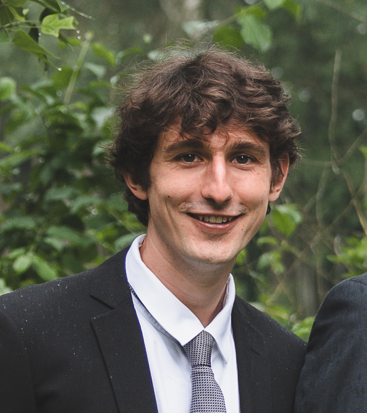

|
Simon Jantsch
I am a computer scientist working on theoretical and practical topics in formal verification.
Currently, I work as a software engineer for Siemens EDA on formal verification of hardware circuits.
Before that, I did my PhD at the TU Dresden under the supervision of Christel Baier. My thesis is about certificates and witnesses for probabilistic model checking. Further research areas that I have contributed to are automata theory and causality-inspired algorithms and explanation methods in verification.
email /
google scholar /
dblp
|

|
SWITSS
A python tool which computes certificates and witnesses for probabilistic model checking.
Developed together with Hans Harder.
|
|
Research
|
|
Work that I'm particularly proud of is highlighted.
|
|
2023
|
Zertifikate und Zeugen im Probabilistischen Model Checking
Ausgezeichnete Informatikdissertationen 2022 (Band D23) - Gesellschaft für Informatik e.V. - Schloss Dagstuhl
|
A Unifying Formal Approach to Importance Values in Boolean Functions
with Hans Harder, Christel Baier and Clemens Dubslaff.
Accepted at the international joint conference on artificial intelligence - IJCAI 2023.
full version
|
|
2022
|
Witnesses and Certificates for probabilistic model checking
PhD thesis, 2022.
|
Probabilistic causes in Markov Chains
with Christel Baier, Florian Funke, Jakob Piribauer and Robin Ziemek.
Innovations in Systems and Software Engineering, 2022.
|
From Emerson-Lei automata to deterministic, limit-deterministic or good-for-MDP automata
with Tobias John , Christel Baier and Sascha Klüppelholz .
Innovations in Systems and Software Engineering, 2022.
|
Operational Causality – Necessarily Sufficient and Sufficiently Necessary
with Christel Baier, Clemens Dubslaff, Florian Funke , Jakob Piribauer and Robin Ziemek .
A Journey from Process Algebra via Timed Automata to Model Learning. Essays Dedicated to Frits Vaandrager on the Occasion of His 60th Birthday, 2022.
|
Parameter Synthesis for Parametric Probabilistic Dynamical Systems and Prefix-Independent Specifications
with Christel Baier, Florian Funke , Toghrul Karimov , Engel Lefaucheux , Joël Ouaknine , David Purser, Markus A. Whiteland and James Worrell.
Concurrency Theory - CONCUR 2022.
|
|
2021
|
Witnessing Subsystems for Probabilistic Systems with Low Tree Width
with Jakob Piribauer and Christel Baier.
Games, Automata, Logics, and Formal Verification - GandALF 2021
full version
|
Probabilistic causes in Markov Chains
with Christel Baier, Florian Funke , Jakob Piribauer and Robin Ziemek.
Automated Technology for Verification and Analysis - ATVA 2021
doi
full version
|
From LTL to Unambiguous Büchi Automata via Disambiguation of Alternating Automata
with David Müller, Christel Baier and Joachim Klein.
Formal Methods in System Design, 2021. doi full version
|
Determinization and Limit-determinization of Emerson-Lei automata
with Tobias John , Christel Baier and Sascha Klüppelholz .
Automated Technology for Verification and Analysis - ATVA 2021 (Best Paper Award!)
doi
full version
|
The Orbit Problem for Parametric Linear Dynamical Systems
with Christel Baier, Florian Funke , Toghrul Karimov , Engel Lefaucheux , Florian Luca, Joël Ouaknine , David Purser, Markus A. Whiteland and James Worrell.
Concurrency Theory - CONCUR 2021.
doi
full version
|
From Verification to Causality-based Explications
with Christel Baier, Clemens Dubslaff, Florian Funke , Rupak Majumdar, Jakob Piribauer and Robin Ziemek.
International Colloquium on Automata, Languages and Programming - ICALP 2021. (invited paper)
doi
full version
|
Causality-based Game Solving
with Christel Baier, Norine Coenen, Bernd Finkbeiner, Florian Funke and Julian Siber.
Computer Aided Verification - CAV 2021.
doi
full version
|
Responsibility and verification: Importance value in temporal logics
with Corto Mascle, Christel Baier, Florian Funke and Stefan Kiefer .
Logic in Computer Science - LICS 2021. doi full version
|
|
2020
|
Reachability in Dynamical Systems with Rounding
with Christel Baier, Florian Funke , Toghrul Karimov , Engel Lefaucheux , Joël Ouaknine , Amaury Pouly, David Purser and Markus A. Whiteland.
Foundations of Software Technology and Theoretical Computer Science - FSTTCS 2020. doi full version |
SWITSS: Computing Small Witnessing Subsystems
with Hans Harder, Florian Funke and Christel Baier.
Formal Methods in Computer-Aided Design - FMCAD 2020. doi talk
|
Minimal witnesses for probabilistic timed automata
with Florian Funke and Christel Baier.
Automated Technology for Verification and Analysis - ATVA 2020. doi full version
|
Farkas certificates and minimal witnesses for probabilistic reachability constraints
with Florian Funke and Christel Baier.
Tools and Algorithms for the Construction and Analysis of Systems - TACAS 2020. doi full version
|
|
2019
|
From LTL to Unambiguous Büchi Automata via Disambiguation of Alternating Automata
with David Müller, Christel Baier and Joachim Klein.
Formal Methods - FM 2019. doi full version
|
|
2018
|
Verifying the LTL to Büchi Automata Translation via Very Weak Alternating Automata
with Michael Norrish.
|
|
{kind=link}